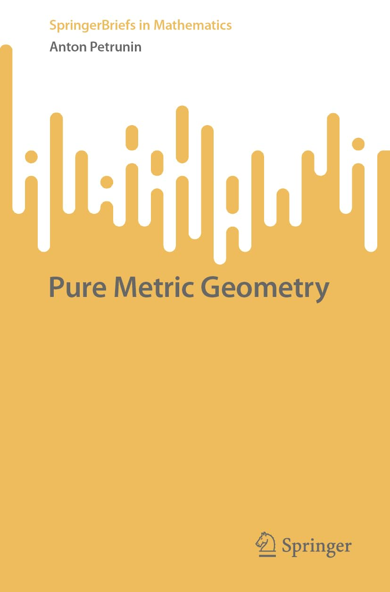

Links: Published version - Erratum - Slightly updated version - Old CC BY-SA version - Source files at GitHub
This text can serve as an introductory part for a variety of courses in metric geometry. We stick to domestic affairs of metric spaces, keeping away from any extra structure. Applications are provided only for illustration.
The only prerequisite is an interest in the subject, but some knowledge of classical geometry, differential geometry, topology, and real analysis will be useful.
1. Definitions
2. Universal spaces
3. Injective spaces
4. Space of subsets
5. Space of spaces
6. Ultralimits
Please email me comments/corrections/suggestions.